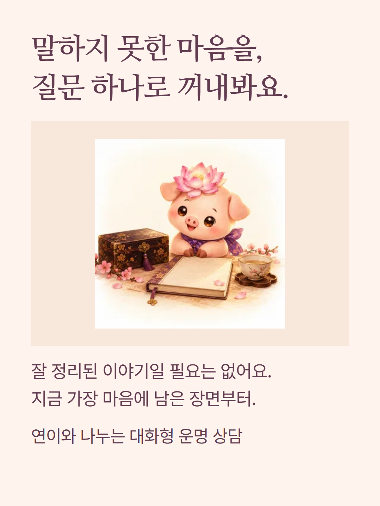
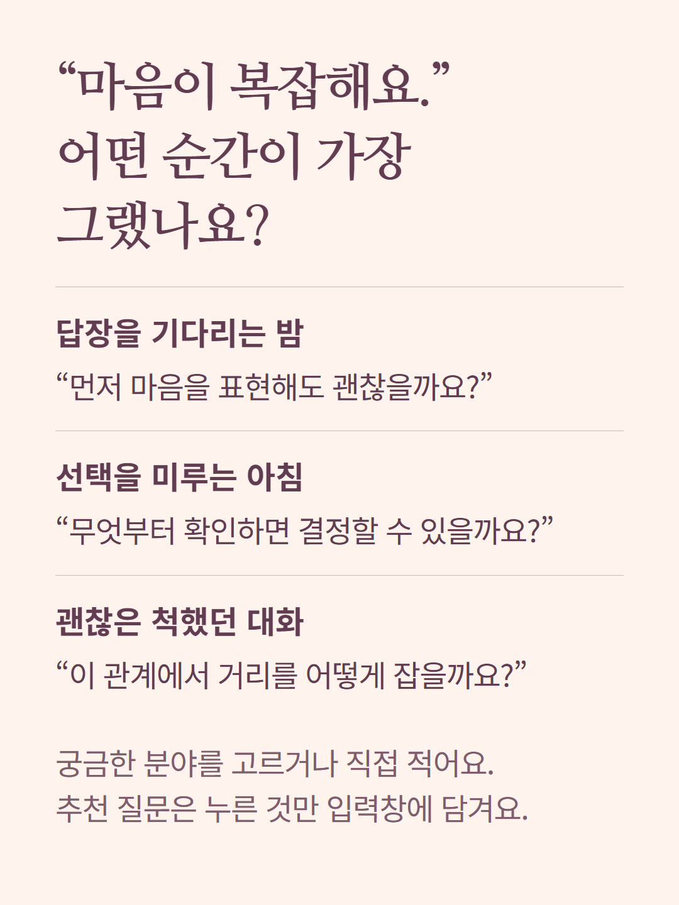
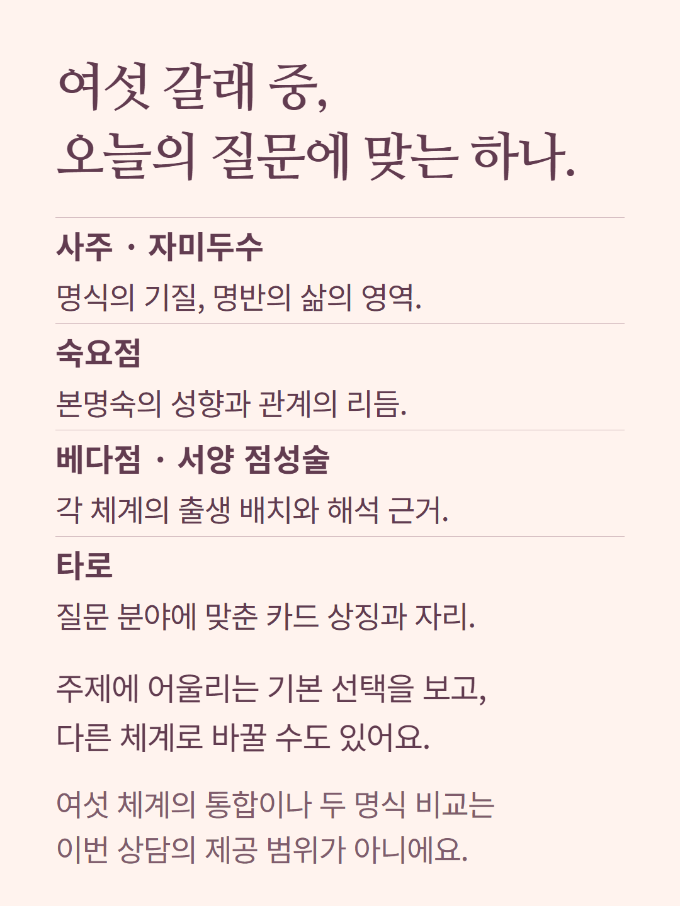
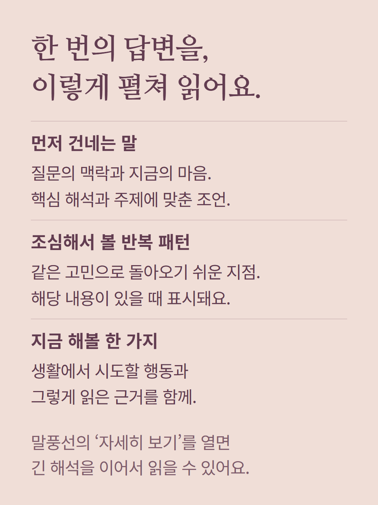
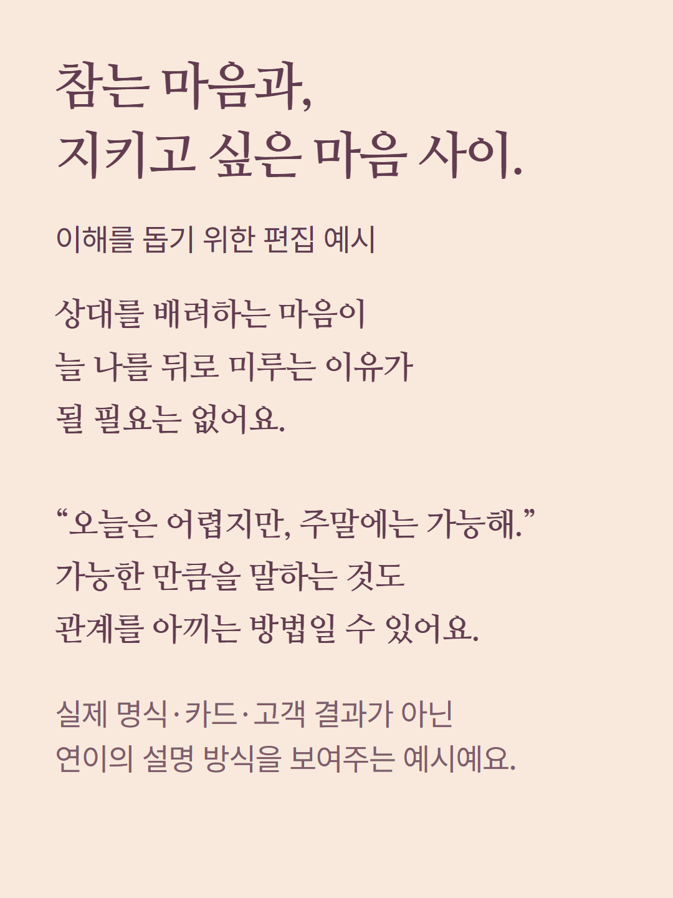
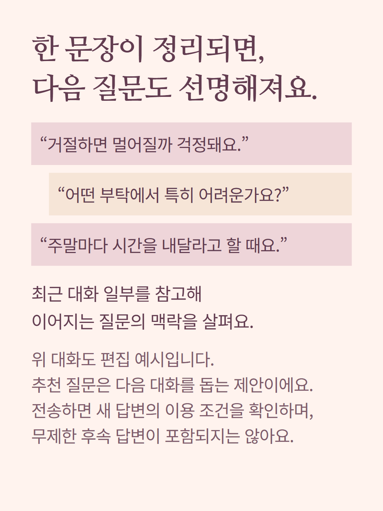
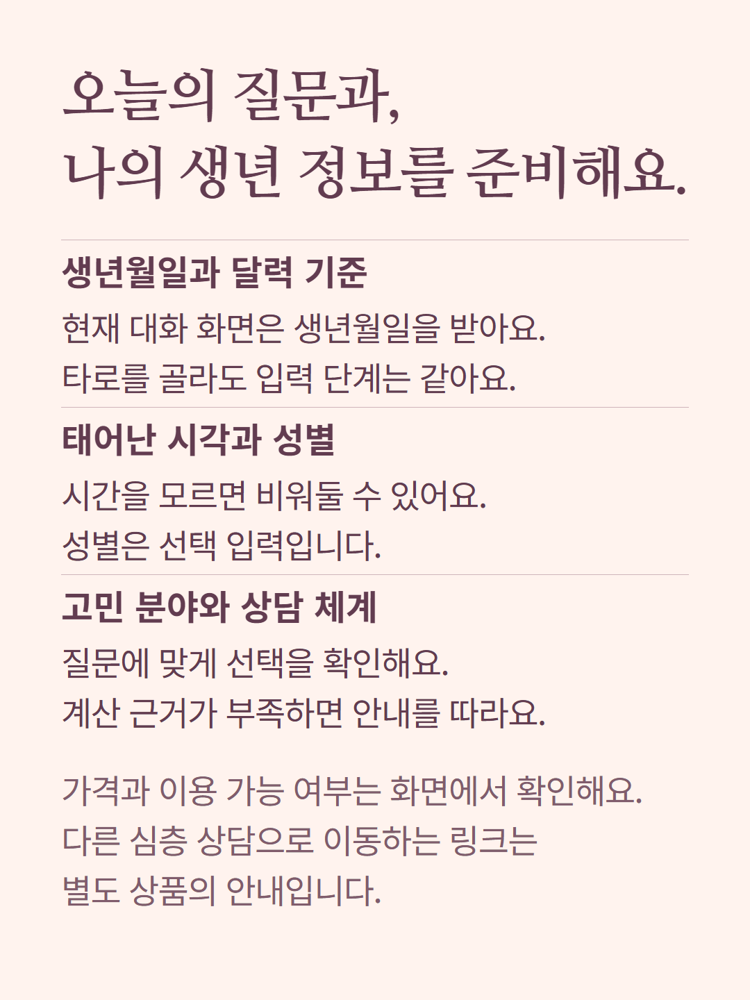
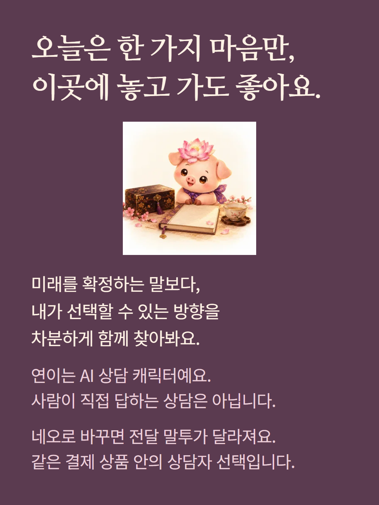

현재 대화형 상담 화면의 1회 유료 답변 구성을 안내합니다. 연이와 네오는 같은 결제 상품의 상담자 선택이며, 해석의 전달 말투가 다릅니다. 선택한 한 체계의 근거로 질문을 읽고 최근 대화 일부를 참고합니다. 추천 질문을 고르는 것과 새 답변을 받는 것은 다르며, 새 질문 전송 시 이용 가능 여부와 결제 조건을 다시 확인합니다. 초융합 등 연결된 상세 상담은 별도 상품입니다. 안내 속 문장은 이해를 돕기 위한 편집 예시로 실제 고객 결과가 아닙니다. 연이는 AI 상담 캐릭터입니다.